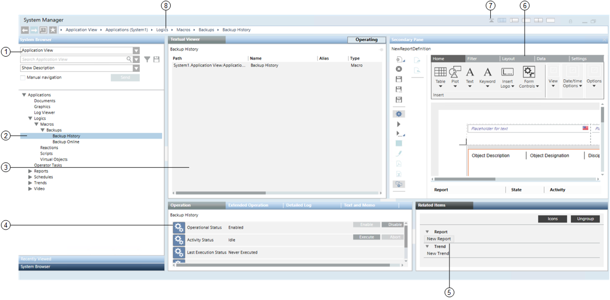
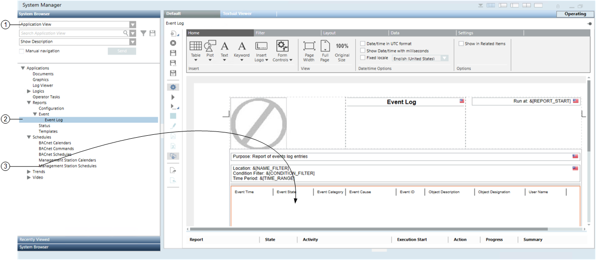

Basic Workflows
Primary Selection Workflow
The following graphic shows the typical workflow for navigating the system:

- Select a view (1) in System Browser, in the Selection pane, such as Application View.
- The selected view displays in the System Browser tree.
- Navigate the tree and select the object (2) you want to work with.
NOTE: Alternatively, right-click the object (2) and select Send to the Primary Pane. - The information about the selected object displays in the Textual Viewer (3), in the Primary pane.
- The properties of the selected object display in the Operation tab (4), in the Contextual pane.
- Links to additional resources associated with the selected object display in the Related Items tab (5), in the Contextual pane.
- Click a related item link (5), such as New Report, to open that resource in the Secondary pane.
- The selected related item displays in the Secondary pane (6).
- If necessary, click the icon (7) to display the navigation bar (8) with icons for moving back and forth between the most recent screens in the Primary pane and going back to the favorite location.
Object Association Workflow
The following graphic shows the typical workflow for manual selection and drag-and-drop, in order to associate two objects:

- Select a view (1) in System Browser, in the Selection pane, for example Application View.
- The selected view displays in the System Browser tree.
- Navigate the tree to select the object (2) you want to work with, for example Event Log.
- The application for the selected object displays in the Default tab, in the Primary pane.
- Drag and drop the selected object (3), for example Management Station Schedules, to the reports area.